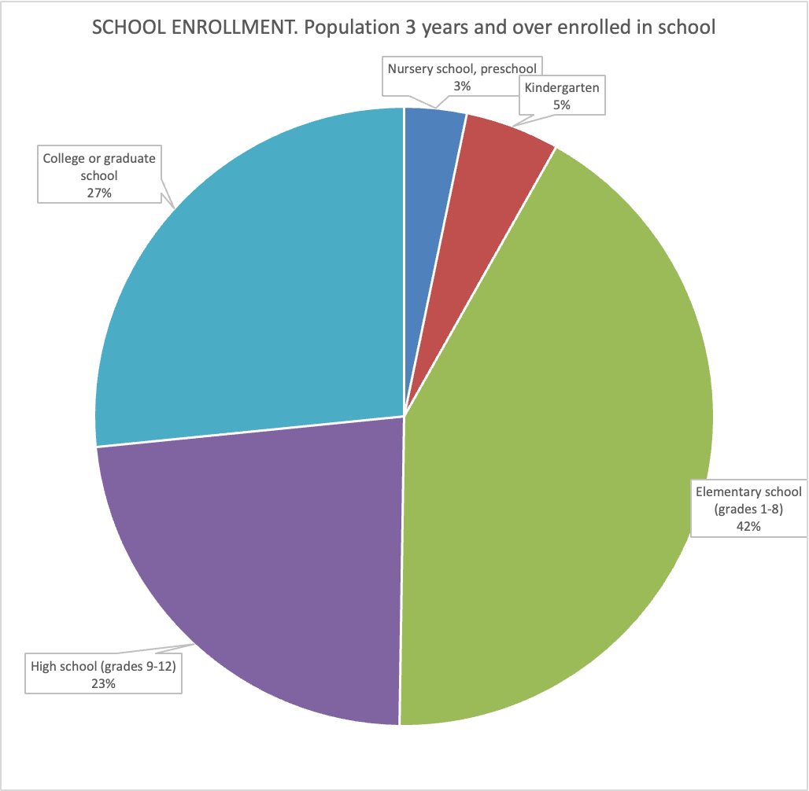
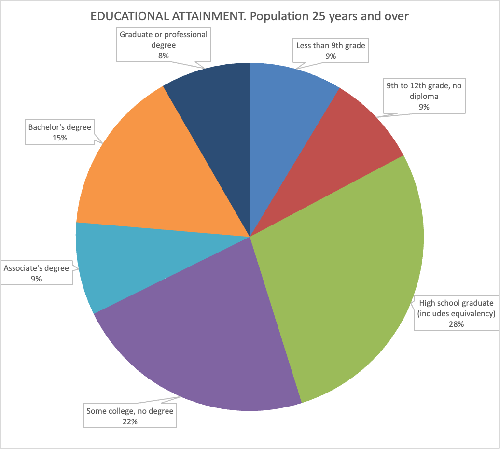
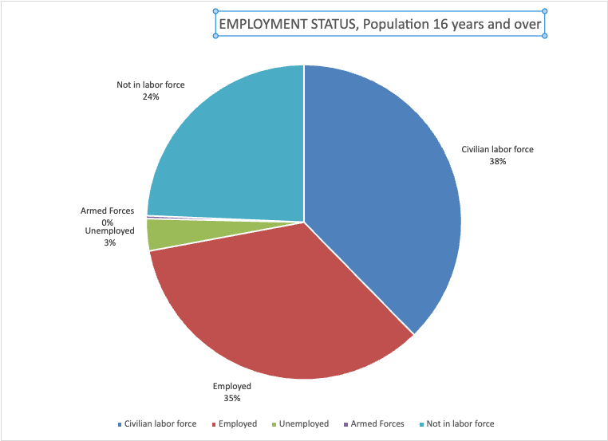
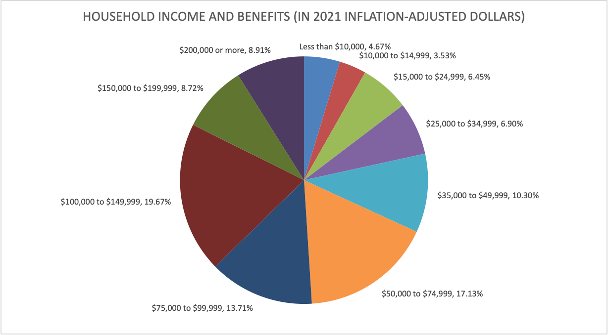

SWOT Analysis Inland Empire High Roads Transition Collaborative (HRTC) June 5, 2023
Opportunities and Threats 1
Ecological Factors 1
Social Factors 1
Economic Factors. 2
Technological Factors. 3
Demographic Factors. 4
Political Factors. 4
References 5
Opportunities and Threats
Ecological Factors
- Resource depletion and pollution
- Destruction of ecosystems
- The Robert Redford Conservancy and 60 other environment groups have submitted a lengthy report to Governor Newsom asking for a one to two year moratorium on building any further warehouses in the Inland Empire.
- Climate change
- Species extinction
- Energy
- Natural disasters
- Flooding
- Wildfires
- Drought
- Earthquake
- The pandemic did not only fuel the warehouse boom in the Inland Empire, it will, if history is any guide, also accelerate the speed of technology adoption.
- Data from past epidemics and pandemics as analyzed by the IMF, suggest that robot adoption accelerates by 20% within four years after a pandemic ends relative to places without such health crises.
- Back-of-the-envelope calculations suggest that an additional 2.6% of the workforce—about 4 million workers—need to transition into new jobs during the next few years as compared to a scenario without a pandemic.
- Climate Change
- Water scarcity
Social Factors
- Population growth,
- the economic gulf between developed, undeveloped, and developing markets
- human rights
- human health
- gender equity
- Education
- The percent of residents in the Inland Empire with a Bachelor Degree or higher is roughly 25%.
- It is over 10 percentage points lower than the same statistic for the Phoenix MSA.

Source: American Community Survey, 2021

Source: American Community Survey 2021
- food security
- urbanization
- community viability
- Gender/educational equity
- Sustainability movements
- Attitudes regarding life-work balance
- Attitudes towards Workforce diversity (and racial equity)
- Consumer confidence in business
Economic Factors.
- Calculating per capita income or per capita GDP for the Inland Empire and the other MSAs, our region sinks and sinks and sinks.
- We end in position 340 out of 384.
- How is that possible?
- It suggests that the goods and services we produce in our area (GDP) are not of high value.
- Note that GDP is calculated by evaluating the goods and services produced within the area.
- Perhaps this is not a fair characterization to the Inland Empire since 35% of our labor force generates GDP to the more coastal areas.
- That is a reasonable objection and as a result, we adjust the calculation to take into account the income that Inland Empire residents make while working in the Greater Los Angeles and San Diego area. This results in an upgrade in the rankings to …. 295 out of 384.
- Inflation and interest rates
- Home sales reached their high point in March 2022, but declined throughout the year and into 2023 as a result of higher mortgage rates.
- Home sales in February 2023 were 35% lower than a year ago in Riverside County and fell 42% in San Bernardino County.
- Saving rates
- Sovereign debt/exchange rates
- Deficits/surpluses
- Employment
- Inland Empire created more jobs since the end of previous expansion with the exception of Stockton-Lodi
- Our region outperformed other Southern California regions in terms of job creation
- Even Silicon Valley (San Jose) did not show the same stellar job creation
- From its peak in May 2020, the unemployment rate has decreased by a stunning 11.2% points.
- The logistics industry, which consists of warehousing, transportation, and the wholesale industry, has seen a huge jump of 24.5% in employment.
- If you exclude the wholesale sector, the increase is even more impressive (36%).
- It is encouraging to see that some other sectors have also performed well: Professional & Business services grew by 9.8% for example. The Information sector has seen significant losses.
- Leisure & Hospitality and Other Services, two of the most affected sectors, have basically completely recovered.
- Note that Government and, in particular Local Government, shed jobs.

Source: American Community Survey, 2021
- The 2023 Economic Report for the State of the Region starts by looking at the possibility of the current expansion ending within the next 12 months, hence forecasting a recession.
- We are predicting a national U.S. recession within a year with a fairly high probability.
Technological Factors.
- Increased transparency from the Internet
- Digitalization
- Mobile communication
- Cloud computing
- Information explosion
- Artificial Intelligence/Automation
- In 2016, 75% or more of the jobs in the five largest occupational groups in the Inland Empire – (here listed in the order of size
- largest to smallest): office and administrative support jobs, logistics jobs, sales jobs, hospitality jobs, and production jobs – were susceptible to automation.
- Interestingly, the total share of jobs in these occupations has not changed much.
- What has changed since then is that logistics jobs increased by roughly 80% and took the top spot, with now every sixth worker in the Inland Empire working in logistics, up from roughly every 9th worker - in just six years.
- At the same time, production jobs dropped to 9th place, but healthcare support occupations, which hold very low automatability, tripled in numbers, holding the previous balance of automatability in place.
- Nonetheless, these are huge structural changes with possibly strong implications once automation arrives: even if the current
- shortage of warehouse space remains (some doubt notwithstanding for the medium run), employment in warehouses post automation will set an even larger number of workers
- free relative to our predictions in 2016.
- As automation will not arrive in all industries at the same speed, high levels of concentration in some of these industries will increase the difficulty to manage adjustment processes in those industries, once they occur.
Demographic Factors.
- Consumer confidence in business
- Population size
- the Inland Empire became the 12th largest MSA in 2021.
- Riverside County and San Bernardino County are now the second largest MSA in California.
- next population up nationally: Boston and Phoenix
- Number 1 MSA in California: Los Angeles-Long Beach-Anaheim

Source: American Community Survey, 2019
Political Factors.
- Pollution and traffic are at the forefront of our regional awareness.
- Some municipalities (Rialto, Colton) have imposed a moratorium on new warehouse construction.
- In addition, the State’s Assembly is currently considering two bills that would impede further development of the region: AB 627 would prohibit, by 2030, heavy-duty diesel trucks from circulating in the streets of San Bernardino and Riverside counties; and AB 1000 would rule out the construction of warehouses larger than 100,000 square feet within a radius of 1,000 feet from a house, a residential development, or other sensitive receptors.
- Failed states
- Geopolitical unrest
- War in Ukraine
- Taiwan/China
- Refugees
References
Keil, M.; Robert Kleinhenz, R.; Moenius, J.; & Lozano, F. (2023, April 3). The Inland Empire 2023: The State of the Region. Lowe Institute. Available from: https://www.lowe-institute.org/wp-content/uploads/2023/04/State-Of-The-Region-2023-Final-Print.pdf
Sirotnik, B.; Niesen, R.; Moran, R.; & Gómez-Arias, T. (2022, December) IAR’S Inland Empire Report on Business. The Institute of Applied Research Housed in CSUSB’s Jack H. Brown College of Business and Public Administration. Available from https://www.csusb.edu/sites/default/files/upload/file/ROB_Dec2022final_ADA.pdf
U.S. Census Bureau (2021) American Community Survey. www.census.gov